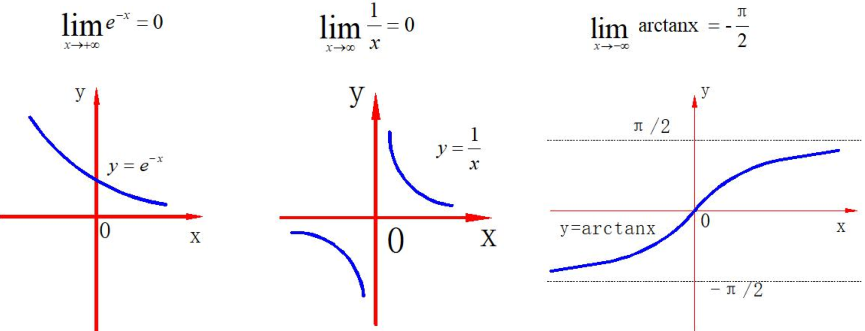
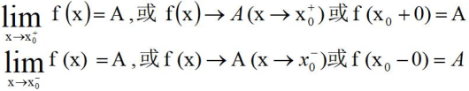
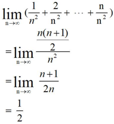
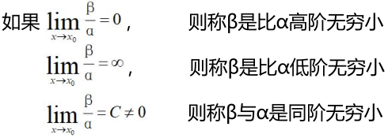
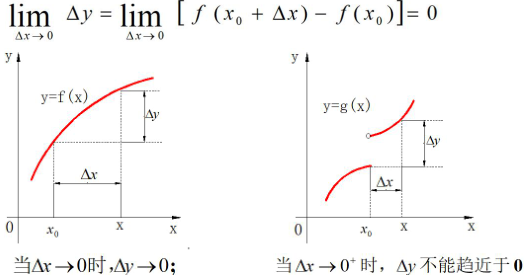
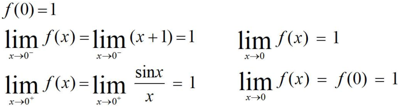
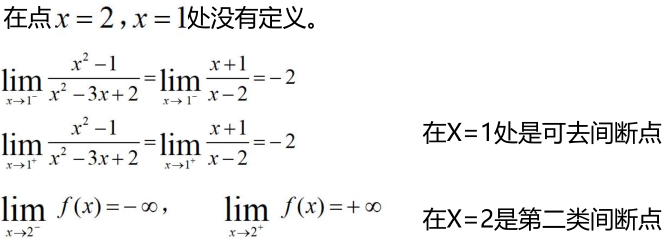
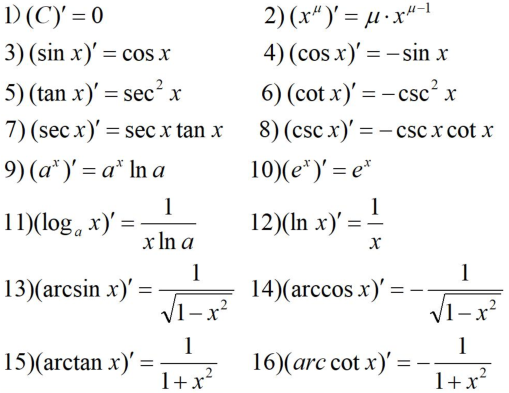
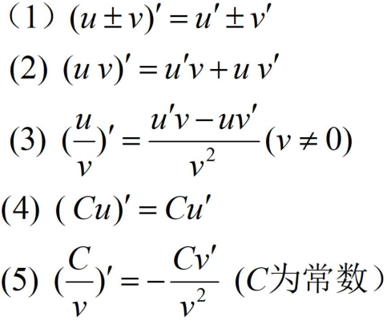

为了加深在人工智能、深度学习领域的学习，接下来会推出数学基础系列博客，加深自己在这领域的基础知识。
函数表示量与量之间的关系如：$A=\pi r^{2}$。更普遍的是用$y=f(x)$表示，其中x表示自变量，y表示因变量。函数在x0处取得的函数值$y_{0}=y\mid _{x=x_{0}}=f(x_{0})$。值得一提的是，符号只是一种表示，也可以用其他符号来表示，比如：$y=g(x)$、$y=\varphi (x)$、$y=\psi (x)$等。
分段函数：$f(x)=\left\{\begin{matrix}\sqrt{x}, &x\geqslant 0 \\ -x, & x< 0\end{matrix}\right.$
反函数：$h=\frac{1}{2}gt^{2}\rightarrow h=h(t) \rightarrow t=\sqrt{\frac{2h}{g}}\rightarrow t=t(h)$
显函数：$y=x^{2}+1$
隐函数：$F(x,y)=0$，$3x+y-4=0$
奇函数：相对于原点对称的函数$f(-x)=-f(x)$，如$f(x)=x^{3}$，代入计算可得$f(-x)=(-x)^{3}=-x^{3}=-f(x)$。
偶函数：相当于Y轴对称的函数$f(-x)=f(x)$，如$f(x)=x^{2}$，代入计算可得$f(-x)=(-x)^{2}=x^{2}=f(x)$。
周期函数：经过一个周期T的变化函数值仍相等$f(x+T)=f(x)$，如常见的三角函数等。
单调性：分为单调递增函数和单调递减函数。
通俗的讲就是一列有序的数：$u_{1},u_{2},...,u_{n},...$，其中$u_{n}$叫做通项。对于数列$\left \{ u_{n} \right \}$，如果当n无限增大时，其通项无限接近于一个常数A，则称该数列以A为极限或称数列收敛于A，否则称数列为发散。$\lim\limits_{n \rightarrow \infty }u_{n} = A$，或$u_{n}\rightarrow A(n\rightarrow \infty )$，$\lim\limits_{n \rightarrow \infty }\frac{1}{3^{n}} = 0$，$\lim\limits_{n \rightarrow \infty }\frac{n}{n+1} = 1$，$\lim\limits_{n \rightarrow \infty }2^{n}$不存在。
符号表示：
$x\rightarrow \infty $表示“当|x|无限增大时” ，
$x\rightarrow +\infty $表示“当x无限增大时” ，
$x\rightarrow -\infty $表示“当x无限减少时” ，
$x\rightarrow x_{0}$表示“当x从x0的左右两侧无限接近于x0时” ，
$x\rightarrow x_{0}^{+}$表示“当x从x0的右侧无限接近于x0时” ，
$x\rightarrow x_{0}^{-}$表示“当x从x0的左侧无限接近于x0时” ，
下面用几个示例图形象地表示极限

函数在x0的邻域内有定义，有$\lim\limits_{x \rightarrow x_{0} }f(x)=A$，或$f(x)\rightarrow A(x-x_{0})$。例如$\lim\limits_{x \rightarrow 1 }\frac{x^{2}-1}{x-1} = \lim\limits_{x \rightarrow 1 }\frac{(x-1)(x+1)}{x-1}=2$
函数在左半邻域/右半邻域内有定义$(x_{0},x_{0}+\delta ),(x_{0}-\delta,x_{0} )$，有

$\lim\limits_{x \rightarrow x_{0} }f(x) = A$的充要条件是$\lim\limits_{x \rightarrow x_{0}^{-} }f(x) = \lim\limits_{x \rightarrow x_{0}^{+} }f(x)=A$
有以下例题，求$f(x)$的极限
$f(x)=\left\{\begin{matrix}
x-1 & x<0\\
0 &x=0 \\
x+1 & x>0
\end{matrix}\right.$
求解可得，当x->0时，f(x)的极限$\lim\limits_{x \rightarrow x_{0}^{+} }f(x) = \lim\limits_{x \rightarrow x_{0}^{+} }(x+1)=1$，$\lim\limits_{x \rightarrow x_{0}^{-} }f(x) = \lim\limits_{x \rightarrow x_{0}^{-} }(x-1)=-1$。左右极限存在但不相等，所以f(x)在x->0时极限不存在。
无穷小：以零为极限，如函数$\lim\limits_{x \rightarrow \infty }\frac{1}{x} = 0$，$\frac{1}{x} $是$x \rightarrow \infty $时的无穷小。$\lim\limits_{x \rightarrow 2 }(3x-6) = 0$，$3x-6 $是$x \rightarrow 2 $时的无穷小。
基本性质：
1.有限个无穷小的代数和仍是无穷小。
2.有限个无穷小的积仍是无穷小。
3.有界变量与无穷小的积仍是无穷小。
4.无限个无穷小之和不一定是无穷小。

5.无穷小的商不一定是无穷小。$\lim\limits_{x \rightarrow 0 }\frac{x}{2x} =\frac{1}{2},\lim\limits_{x \rightarrow 0 }\frac{x^{2}}{2x} =0,\lim\limits_{x \rightarrow 0 }\frac{2x}{x^{2}} =\infty $
6.极限有无限小的关系：$\lim\limits_{x \rightarrow x_{0} }f(x) =A$的充要条件是$f(x)=A+\alpha (x)$，其中$\alpha (x)$是$x \rightarrow x_{0} $时的无穷小。
7.无穷大：并不是一个很大的数，是相对于变换过程来说。$\lim\limits_{x \rightarrow x_{0} }f(x) =\infty $或$f(x)\rightarrow \infty (x\rightarrow x_{0})$。
8.无穷小和无穷大的关系：在自变量的变换的同一过程中，如果f(x)为无穷大，那么$\frac{1}{f(x)}$为无穷小。
9.无穷小的比较：$\alpha =\alpha (x),\beta =\beta (x)$都是无穷小，$\lim\limits_{x \rightarrow x_{0} }\alpha (x) =0,\lim\limits_{x \rightarrow x_{0} }\beta (x) =0$。有如下比较。

设函数y=f(x)在点x0的某邻域内有定义，如果当自变量的改变量$\Delta x$趋近于0时，相应函数的改变量$\Delta y$也趋近于0，则称y=f(x)在点x0处连续。

函数的连续性，函数f(x)在点x0处连续，需要满足的条件：1、函数在该点有定义。2、函数在该点极限$\lim\limits_{x \rightarrow x_{0} }f(x)$存在。3、极限值等于函数值f(x0)
例题，函数$f(x)=\left\{\begin{matrix}x+1 & x\leqslant 0\\ \frac{\sin x}{x} & x> 0\end{matrix}\right.$在x=0处的连续性？
解：判断左右界限是否存在且先等。如下图所示

函数f(x)在点x=x0处不连续，则称其为函数的间断点。一共三种情况为间断点：1、函数f(x)在点x0处没有定义。2、函数在该点极限$\lim\limits_{x \rightarrow x_{0} }f(x)$不存在。3、满足前两点，但是$\lim\limits_{x \rightarrow x_{0} }f(x)\neq f(x)$。
当x->x0时，f(x)的左右极限存在，则称x0为f(x)的第一类间断点，第一类间断点分为跳跃间断点和可去间断点，否则为第二类间断点。
跳跃间断点：$\lim\limits_{x \rightarrow 0^{-} }f(x)$与$\lim\limits_{x \rightarrow 0^{-} }f(x)$均存在，但不相等。
可去间断点：$\lim\limits_{x \rightarrow x_{0} }f(x)$存在但不等于$f(x_{0})$。
函数$f(x)=\frac{x^{2}-1}{x^{2}-3x+2}$的连续性？

平均速度很好表示，如v=s/t，但是如何表示瞬时速度呢？
瞬时经过路程：$\Delta s=s(t_{0}+\Delta t)-s(t_{0})$
这一小段的平均路程：$\bar{v} = \frac{\Delta s}{\Delta t}=\frac{s(t_{0}+\Delta t)-s(t_{0})}{\Delta t}$
当$\Delta t\rightarrow 0$时也就是瞬时速度了，$v(t_{0})=\lim\limits_{\Delta t \rightarrow 0 }\bar{v}=\lim\limits_{\Delta t \rightarrow 0 }\frac{\Delta s}{\Delta t}=\lim\limits_{\Delta t \rightarrow 0 }\frac{s(t_{0}+\Delta t)-s(t_{0})}{\Delta t}$。
导数：如果平均变化率的极限存在， $\lim\limits_{\Delta x \rightarrow 0 }\frac{\Delta y}{\Delta x}=\lim\limits_{\Delta x \rightarrow 0 }\frac{f(x_{0}+\Delta x)-f(x_{0})}{\Delta x}$，则称此极限为函数y=f(x)在点x0处的导数f'(x0)。$y'\mid _{x=x_{0}},\frac{dy}{dx}\mid _{x=x_{0}}$或$\frac{df(x)}{dx}\mid _{x=x_{0}}$。
下面列出常见函数的导数。

下面列出导数的运算法则（最后一条不经常用）：
